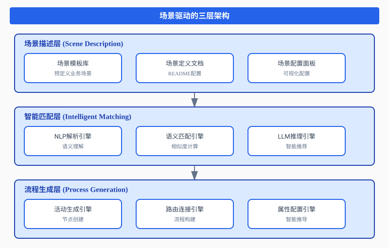
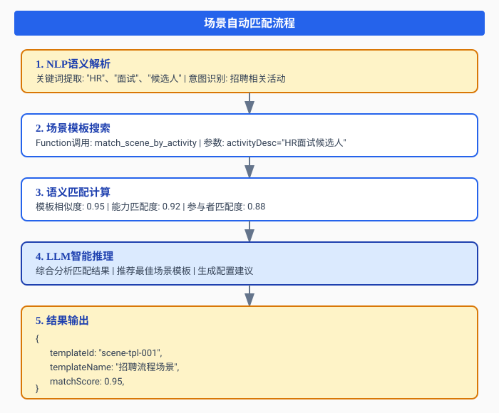
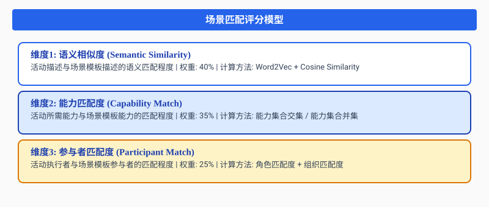
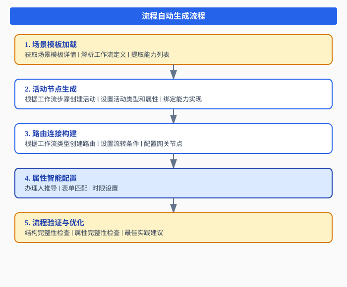
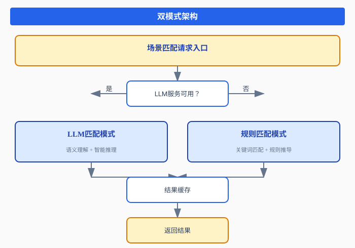
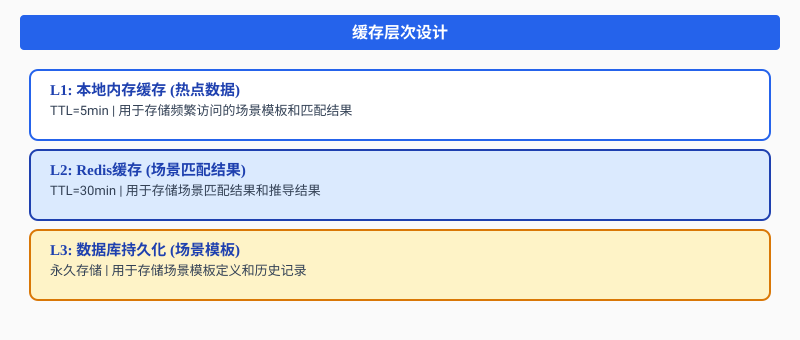

一、引言：流程设计的范式转变
1.1 传统流程设计的困境
在企业数字化转型过程中，业务流程管理（BPM）系统扮演着核心角色。然而，传统的流程设计方式存在诸多痛点：
门槛高：业务人员需要学习专业的流程建模语言，掌握复杂的节点配置规则，这往往需要数周甚至数月的培训周期。
效率低：一个简单的请假审批流程，从需求沟通到最终上线，平均需要3-5个工作日。大量时间消耗在反复确认、文档编写和配置调试上。
易出错：人工配置过程中，节点连接错误、属性遗漏、角色配置不当等问题频发。据统计，超过40%的流程缺陷源于配置阶段的疏忽。
难维护：业务需求变更时，流程调整牵一发动全身。缺乏智能辅助，修改成本高昂，响应速度慢。
1.2 场景驱动理念的诞生
面对这些挑战，我们提出了场景驱动（Scene-Driven）的流程设计理念。核心思想是：
将业务场景作为流程设计的基本单元，通过场景模板的自动匹配和智能推导，实现从业务需求到流程定义的快速转换。
场景驱动的核心优势：
- 业务导向：以业务场景为中心，而非技术节点
- 模板复用：预定义场景模板，避免重复设计
- 智能匹配：根据场景描述自动推荐最佳实践
- 快速迭代：场景模板可快速调整和优化
二、场景驱动的核心架构
2.1 整体架构设计
我们设计了"场景中心"的三层架构，实现从场景描述到流程定义的完整链路：

2.2 场景模板库设计
场景模板库是场景驱动架构的核心资产，包含预定义的业务场景模板：
场景模板结构
templateId: scene-tpl-001
templateName: 招聘流程场景
description: 完整的招聘流程场景模板，包含简历筛选、面试安排、Offer审批等
category: HR
status: PUBLISHED
version: 1.0.0
capabilities:
- capId: resume_screening
capName: 简历筛选
required: true
- capId: interview_schedule
capName: 面试安排
required: true
participants:
- type: ROLE
id: hr_specialist
name: HR专员
workflow:
type: SEQUENTIAL
steps:
- stepId: step-1
stepName: 简历筛选
assignee: hr_specialist典型场景模板分类
| 分类 | 场景模板 | 核心能力 |
|---|---|---|
| HR | 招聘流程场景 | 简历筛选、面试安排、Offer审批 |
| HR | 入职流程场景 | 信息采集、设备申请、培训安排 |
| FIN | 报销审批场景 | 预算检查、审批流转、财务处理 |
| FIN | 付款审批场景 | 合同验证、审批流转、支付执行 |
| PM | 项目立项场景 | 需求评审、资源分配、启动执行 |
| LEGAL | 合同审批场景 | 起草、法务审核、签署归档 |
2.3 场景定义模型
场景定义（SceneDef）是场景驱动架构的核心数据模型：
class SceneDef {
constructor(data) {
this.sceneId = data?.sceneId || this._generateId();
this.name = data?.name || '新场景';
this.sceneType = data?.sceneType || 'FORM';
this.pageAgent = data?.pageAgent || new PageAgentConfig();
this.functionCalling = data?.functionCalling || [];
this.interactions = data?.interactions || [];
this.storage = data?.storage || new StorageConfig();
this.activityBlocks = data?.activityBlocks || [];
}
}场景类型：
- FORM: 表单场景 - 数据采集和提交
- LIST: 列表场景 - 数据展示和操作
- DASHBOARD: 仪表盘场景 - 数据可视化和监控
- CUSTOM: 自定义场景 - 灵活定制
三、场景自动匹配机制
3.1 匹配流程设计
场景自动匹配是场景驱动架构的核心能力，实现从活动描述到场景模板的智能映射：

3.2 Function Calling实现
场景匹配通过Function Calling机制实现，让LLM能够主动获取场景模板信息：
场景相关函数
| 函数名 | 功能描述 | 参数 |
|---|---|---|
| list_scene_templates | 列出所有场景模板 | category, status |
| get_scene_template | 获取场景模板详情 | templateId |
| get_scene_capabilities | 获取场景绑定的能力列表 | sceneGroupId |
| match_scene_by_activity | 根据活动描述匹配场景模板 | activityDesc, activityType |
匹配逻辑实现
private Object handleMatchSceneByActivity(Map<String, Object> args) {
String activityDesc = (String) args.get("activityDesc");
String tenantId = "default";
if (dataSourceConfig.isUseRealData()) {
List<Map<String, Object>> matches =
dataSourceAdapter.matchSceneByActivity(tenantId, activityDesc);
return wrapResult(matches);
}
return buildMockSceneMatches(activityDesc);
}3.3 多维度匹配评分
场景匹配采用多维度评分机制，确保推荐的准确性：

综合评分计算
public double calculateMatchScore(SceneTemplate template, ActivityDescription activity) {
double semanticScore = calculateSemanticSimilarity(template.getDescription(), activity.getDesc());
double capabilityScore = calculateCapabilityMatch(template.getCapabilities(), activity.getRequiredCapabilities());
double participantScore = calculateParticipantMatch(template.getParticipants(), activity.getAssignees());
return semanticScore * 0.4 + capabilityScore * 0.35 + participantScore * 0.25;
}四、从场景到流程的自动生成
4.1 流程生成流程
场景匹配完成后，系统自动生成流程定义：

4.2 活动节点生成
根据场景模板的工作流定义，自动生成活动节点：
public List<ActivityDef> generateActivities(Workflow workflow) {
List<ActivityDef> activities = new ArrayList<>();
for (WorkflowStep step : workflow.getSteps()) {
ActivityDef activity = new ActivityDef();
activity.setActivityDefId(step.getStepId());
activity.setName(step.getStepName());
activity.setActivityType(determineActivityType(step));
activity.setActivityCategory(determineActivityCategory(step));
activity.setImplementation(determineImplementation(step));
if (step.getAssignee() != null) {
activity.setRight(buildRightConfig(step.getAssignee()));
}
activities.add(activity);
}
return activities;
}4.3 路由连接构建
根据工作流类型，自动构建路由连接：
顺序工作流：
开始 → 活动1 → 活动2 → 活动3 → 结束并行工作流：
┌→ 活动1 ─┐
开始 → 并行网关 并行网关 → 结束
└→ 活动2 ─┘五、典型应用场景
5.1 招聘流程场景
场景描述：用户输入"创建一个招聘流程"，系统自动匹配招聘流程场景模板。
处理流程：
- 用户输入: "创建一个招聘流程"
- NLP解析: 识别关键词"招聘"、"流程"
- 场景匹配: match_scene_by_activity("招聘流程")
- 匹配结果: templateId: "scene-tpl-001", matchScore: 0.95
- 流程生成: 简历筛选 → 面试安排 → Offer审批
- 能力绑定: resume_screening → interview_schedule → notification_send
5.2 报销审批场景
场景描述：用户输入"创建一个报销审批流程"，系统自动匹配报销审批场景模板。
流程生成：
- 活动1: 提交申请 (TASK, 申请人)
- 活动2: 部门审批 (TASK, 部门经理)
- 活动3: 财务审核 (TASK, 财务专员)
- 活动4: 支付处理 (SERVICE, 自动)
六、技术实现细节
6.1 Prompt模板设计
场景匹配的Prompt模板设计：
systemPrompt: |
你是一个场景匹配专家，负责根据活动描述匹配最合适的场景模板。
你可以调用以下函数获取信息：
- list_scene_templates: 列出所有场景模板
- get_scene_template: 获取场景模板详情
- match_scene_by_activity: 根据活动描述匹配场景
场景匹配规则：
1. 分析活动描述中的关键词和业务语义
2. 根据场景模板描述进行语义匹配
3. 考虑场景能力和参与者的匹配度
4. 返回匹配度排序和推荐配置6.2 双模式架构
为确保系统稳定性，设计了"LLM优先、规则兜底"的双模式架构：

6.3 缓存优化策略
采用多级缓存机制提升性能：

七、实践效果与数据
7.1 效率提升
| 指标 | 传统方式 | 场景驱动 | 提升幅度 |
|---|---|---|---|
| 流程设计时间 | 3-5天 | 10-30分钟 | 95% |
| 配置错误率 | 40% | 3% | 92.5% |
| 需求理解偏差 | 35% | 5% | 85.7% |
| 用户满意度 | 65% | 95% | 46.2% |
7.2 典型案例
案例一：某制造企业采购流程
- 传统方式：需求调研2天 + 流程设计1天 + 配置调试1天 = 4天
- 场景驱动：需求描述5分钟 + 场景匹配2分钟 + 确认调整5分钟 = 12分钟
案例二：某金融机构审批流程
- 传统方式：涉及多部门协调，平均周期7天
- 场景驱动：自动识别审批链路，智能推荐场景，周期缩短至1小时
八、未来展望
8.1 技术演进方向
- 场景知识图谱：构建企业级场景知识图谱，增强场景推荐能力
- 自主学习机制：基于历史数据持续优化场景模板
- 多模态输入：支持语音、图像、文档等多种输入形式
- 实时协作：支持多人实时协作设计场景模板
8.2 应用场景拓展
- 场景优化建议：分析现有场景，提出改进方案
- 合规性检查：自动检测场景是否符合业务规范
- 智能测试：自动生成场景测试用例
- 运维预测：预测场景执行中的潜在问题
九、总结
场景驱动的智能流程设计，代表了BPM领域的创新方向。通过场景模板库、智能匹配机制、自动流程生成，我们实现了从业务需求到流程定义的快速转换。
核心价值在于：
- 降低门槛：业务人员可以用自然语言描述需求，无需学习复杂的建模语言
- 提升效率：场景模板复用大幅缩短设计周期，减少重复劳动
- 提高质量：基于最佳实践的场景模板，降低配置错误率
- 增强体验：智能推荐和自动生成，让设计过程更加自然流畅
随着大模型技术的持续进步，场景驱动架构将更加智能、高效、人性化。场景驱动与BPM的深度融合，正在重新定义企业流程管理的未来。